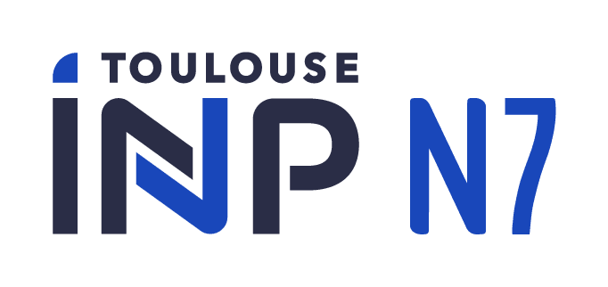
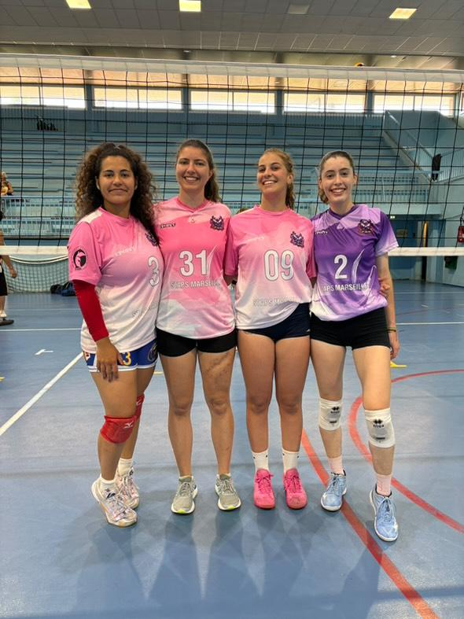
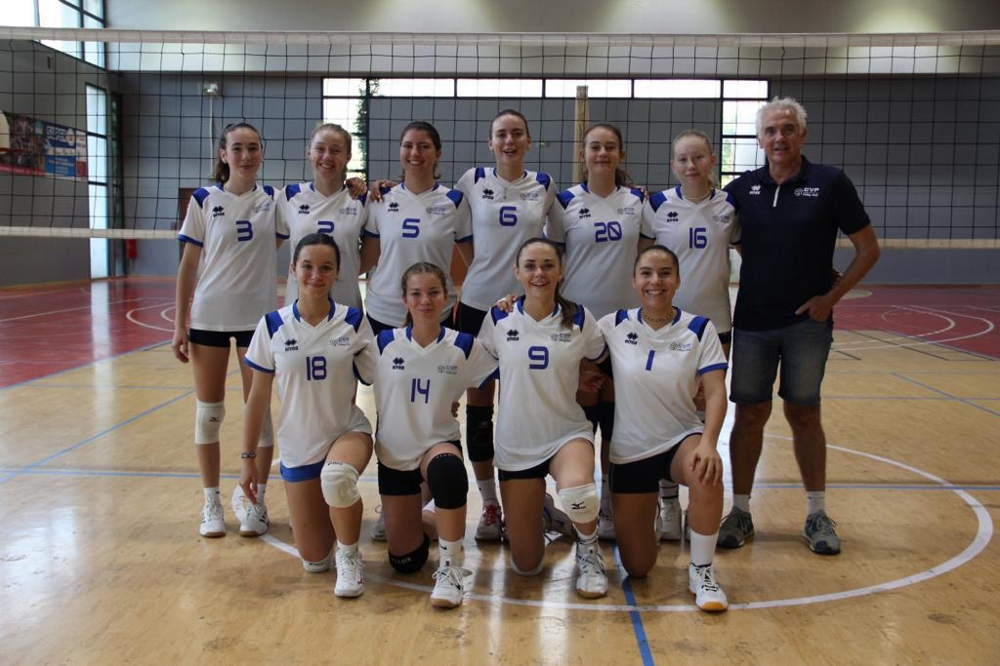
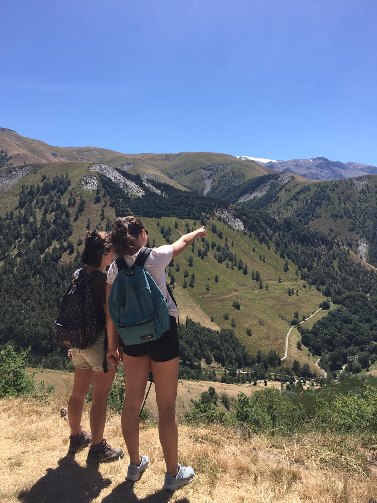

Accueil
Bonjour, je suis Manon Coulon. J'ai 20 ans et je suis actuellement étudiant en première année d'ingénierie à l'ENSEEIHT à Toulouse, avec une spécialisation en électronique, énergie électrique et automatisation(3EA). J'ai toujours été passionné par la manière dont les systèmes intelligents et les technologies renouvelables peuvent fonctionner ensemble pour façonner un monde plus durable et plus connecté.
- Domaine  Étudiante en 1ère année à l'ENSEEIHT
- Localisation Toulouse (31500)
Elevator Speech
Découvrez mes atouts professionnels et mes inspirations en quelques minutes :
Durée : ~3 minutes • Format : MP4
Compétences clés
- Qualité d'écoute
- Esprit d'équipe
- Autonomie
- Être organisée
Langues
- 🇬🇧 Anglais : niveau B2
- 🇪🇸 Espagnol : niveau B1
Cours d'ingénierie

Projet scientifique – Transition énergétique (TIPE)
Dans le cadre de mon TIPE, projet axé sur les énergies renouvelables et la transition écologique, j’ai étudié l’influence néfaste de la température sur les performances des panneaux photovoltaïques et recherché des solutions pour améliorer leur rendement et réduire les pertes énergétiques.
Après une analyse théorique du comportement des cellules solaires face à la chaleur, j’ai mené des mesures expérimentales afin de quantifier ces effets et de tester plusieurs méthodes de refroidissement, actives et passives. J’ai ensuite interprété, comparé et validé mes résultats expérimentaux par rapport aux modèles théoriques, ce qui m’a permis de mieux comprendre les compromis entre performance énergétique, contraintes environnementales et faisabilité technique.

Stage de 3ème (2020)
Lors de cette première immersion dans le monde professionnel, j’ai découvert les différents métiers et l’environnement de travail au sein d’une entreprise technologique. J’ai pu observer plusieurs domaines d’activité tels que l’ingénierie, le contrôle qualité, les méthodes, la production et la logistique. J’ai également été initiée à divers outils professionnels, notamment le logiciel SAP, la conception assistée par ordinateur (Pro-Engineer).
Cette expérience m’a aidé à développer des qualités essentielles en milieu professionnel comme l’écoute, la rigueur, la curiosité et la capacité d’adaptation.
Mobilité
Projets futurs
Pays d'Europe du Nord (Danemark, la Suède, la Norvège ou les Pays-Bas)
Pour découvrir une approche concrète et avancée des réseaux d’énergie intelligents dans des pays leaders en matière de durabilité.

Canada
Pour approfondir les compétences techniques et scientifiques en IA et systèmes embarqués dans un environnement de recherche réputé et stimulant. Notamment Montréal, Toronto ou Vancouver, qui sont reconnus internationalement pour leurs recherches en intelligence artificielle et en technologies embarquées.
Engagement civique
Mes actions dans le bénévolat, l'événementiel, le service communautaire et les projets citoyens.

Volontariat sportif – Ligue des Nations de Volley
- Participation à un événement international (ramasseuse de balle, accueil du public).
- Esprit d’équipe, sens du service, responsabilité.
- Accueil du public et assistance logistique pendant la compétition.

Volontaire – Jeux Olympiques de Paris 2024
- Accueil, orientation et accompagnement des spectateurs (français et étrangers).
- Mise en avant de qualités humaines : diplomatie, écoute, gestion du stress, adaptabilité.
- Contribution à un événement d’intérêt national et collectif.

Projet solidaire – Voyage humanitaire au Chili (été 2026)
- Projet de voyage solidaire avec le club Human7 visant à aider, tutorer et sensibiliser des enfants dans des écoles ou des orphelinats au Chili.
- Objectifs : favoriser l’accès à l’éducation, encourager l’ouverture culturelle et renforcer les valeurs de solidarité internationale.
- Une expérience humaine et éducative centrée sur l’échange et l’entraide.
Sports & Activités
-
 Volley-ball
J'ai joué au volley-ball en club pendant 12 ans :
- 9 ans dans le club de Venelles (PAVVB, club professionnel féminin)
- 3 ans dans le club de Velaux (CVF, niveau prénational)
J’ai participé à de nombreuses compétitions nationales :
- Coupes de France jeune (de M13 à M18)
- Tournois internationaux (Hyères et Mougins, à plusieurs reprises)
J’ai finalement atteint un niveau National 3 et je fais maintenant partie de l'équipe 1 de l'AS INP.
-
Piano
J'ai joué du piano pendant 5ans ainsi qu'un peu de solvège. J'ai notamment participer à des représentations.
-

 Randonnée
Randonnée- Passion pour la montagne et la découverte de nouveaux paysages, notamment les sentiers des Alpes.
- Projet GR20 en Corse
Contact
Vous pouvez me contacter par mail à l'adresse : coulon.m23@gmail.com .
Retrouvez-moi sur LinkedIn : linkedin.com/in/manon-coulon-472b63383
En effet, l'ingénierie ne concerne pas seulement la science et la technologie, mais aussi les personnes, le progrès et les objectifs. En apprenant auprès de professionnels inspirants et en travaillant sur des projets internationaux, j'espère contribuer à un avenir
plus propre, plus intelligent et plus connecté.